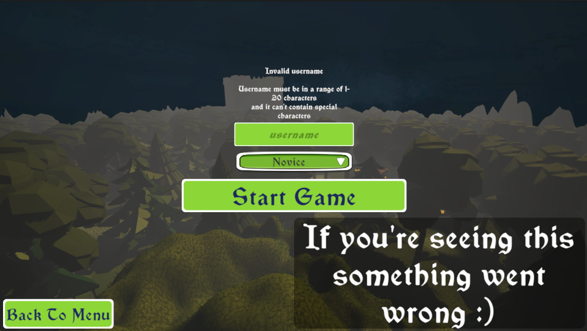
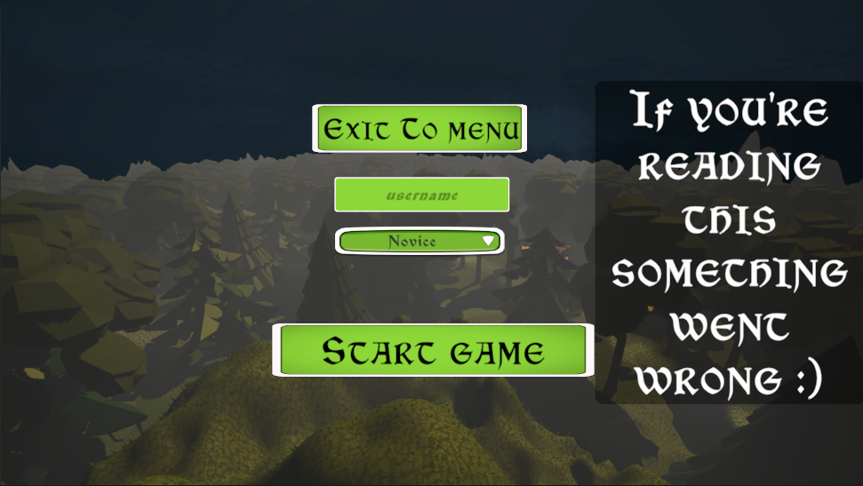

Overhauled Menus with a fresh look
Greetings, Guardians!
I'm thrilled to announce a visual overhaul in Fortress Guardian, addressing the outdated menus. Today marks a significant step forward as we introduce sleek and modern designs to enhance your gaming experience.
Clunkiness away!
Remember those clunky, outdated menus?
Well, they're a thing of the past now!
I've listened to your feedback, and today,
I'm proud to unveil brand-new menus that are as fancy as possible.
New vs Old map menu entry
New Game Menu
I've completely revamped the New Game menu. Say goodbye to the old and outdated design that left much to be desired. The new menu offers a fresh design that sets the stage for your epic adventures in Fortress Guardian.
New Menu
Old Menu
Updated Map Menu
Fortress Guardian's Map Menu has also undergone a transformation. Say goodbye to the old, clunky interface which tried to squeeze in too much into a small space. Instead of it, you'll find a visually striking interface that showcases each map in all its glory and makes it easier to read and navigate. I've also decided to add a global switch to toggle between campaign and endless mode instead of having two separate buttons.
Refreshed Main Menu Background
Lastly, I've changed the Main Menu background to get rid of the AI generated sh*t Gone are the days of staring at an image that does not even reflect the true looks of Romardia. Instead, you'll be greeted by a screenshot directly from the game, showcasing the beauty of the world you're about to explore. Whether you're gearing up for battle or taking a moment to admire the scenery, the new Main Menu background is sure to leave a lasting impression.
What's Next?
With the rollout of the revamped menus, I'm committed to providing you with an immersive and visually stunning gaming experience.
I'll continue to listen to your feedback and make improvements based on your suggestions.
Stay tuned for more updates, thank you for your support.
See you on the battlefield, Guardians!
Ondrej Janousek
Lead Developer of Fortress Guardian